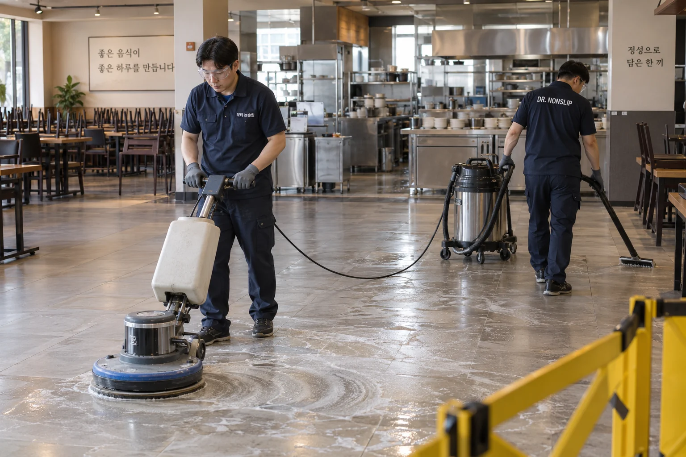

시공방법 · 표면 식각
젖은 바닥을 더 잘 딛도록,
표면의 구조를 바꿉니다.
기존 타일·석재에 미세한 표면 변화를 만드는 식각 방식.
바닥을 교체하거나 코팅층을 덧씌우지 않고 미끄럼 저항을 개선합니다.

왜 미끄럼 저항이 달라질까요?
미세한 요철이,
물막의 영향을 줄입니다.
매끄러운 바닥은 물막이 발바닥·밑창과의 접촉을 방해할 수 있습니다. 식각은 전용 약제가 기존 표면에 작용해 미세한 요철을 만드는 방식입니다.
이 요철이 물막의 영향을 줄여, 젖은 상태의 접촉과 미끄럼 저항 개선을 돕습니다.
처리 전
매끄러운 표면
물막이 바닥과의
접촉을 방해
처리 후
미세한 요철
물막의 영향을 줄여
접촉·저항 개선
- 발바닥·밑창
- 물기
- 기존 바닥
- 기존 바닥을 그대로 활용
- 시공에 적합한 타일·석재는 철거·교체 없이 표면을 처리합니다.
- 덧씌우는 코팅층 없이
- 기존 표면 자체에 작용하므로 새로운 도막의 들뜸·벗겨짐을 관리하는 방식과 구조가 다릅니다.
- 현장에서 정하는 처리 조건
- 재질과 마감에 따라 반응이 다르므로 작은 구역의 샘플로 조건을 정합니다.
재질별 적용
표면 마감에 맞춰
시공 조건을 정합니다.
타일과 석재의 재질, 광택과 기존 마감을 살핀 뒤 실제 바닥에서 샘플을 적용합니다.
재질 설명 이미지입니다. 고객과 샘플 결과를 살핀 뒤 적용 여부와 범위를 결정합니다.
작업 순서
준비부터 마무리까지,
현장에 맞춘 세 단계.
사전 샘플 테스트 후 합의한 범위에 시공하고, 결과와 이용 방법을 안내합니다.

01세척과 준비
표면과 오염을 살피고 작업 구역과 이용 동선을 분리합니다.
- 02
표면 처리
재질과 약제의 지침에 맞는 조건으로 표면 반응을 관리합니다.
 03
03마무리와 결과 안내
잔여물을 정리하고 합의한 조건에서 결과와 이용 시점을 살핍니다.
장기간 활용하는 표면
적절한 관리로,
반영구적인 활용을 기대합니다.
식각은 기존 바닥의 표면 자체에 작용하는 공법입니다. 적절한 관리를 통해 5년 이상의 장기 사용을 목표로, 현장에 맞는 관리 방법을 안내합니다.
재질에 맞는 정기 세척과 점검으로 처리된 표면을 오래 활용합니다. 유지 기간은 이용량·마모와 관리 상태에 따라 달라집니다.
오래 쓰는 관리 방법